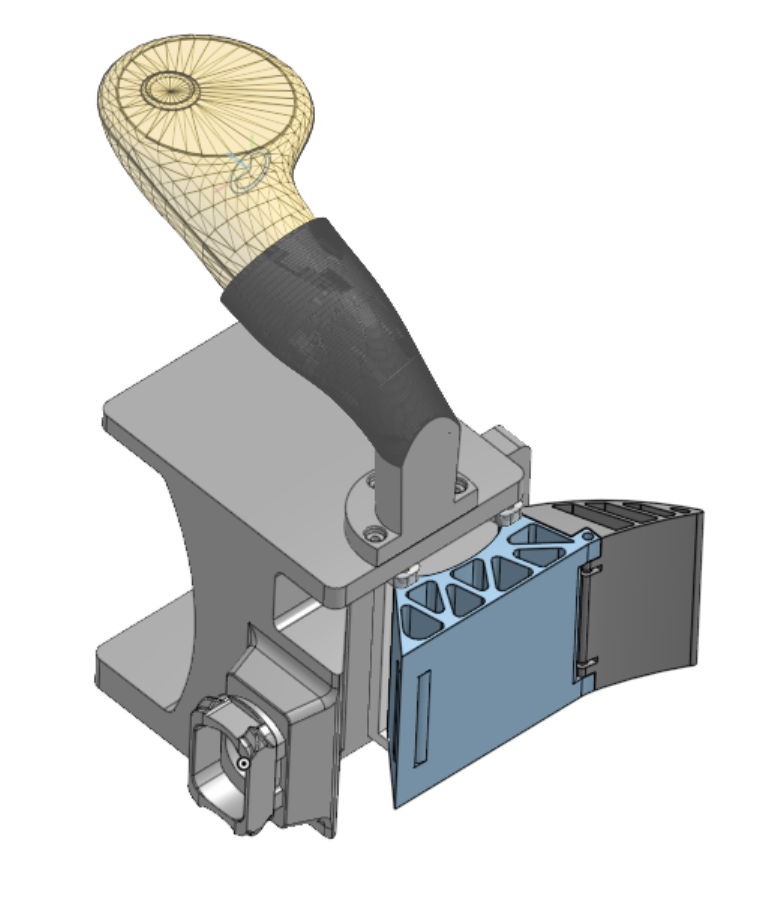
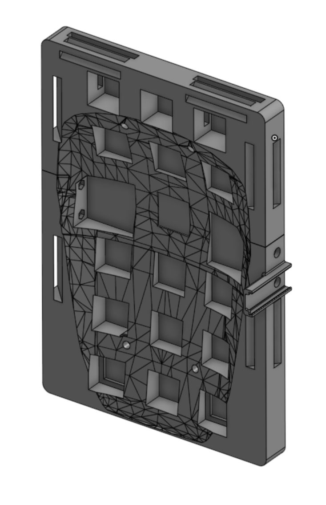
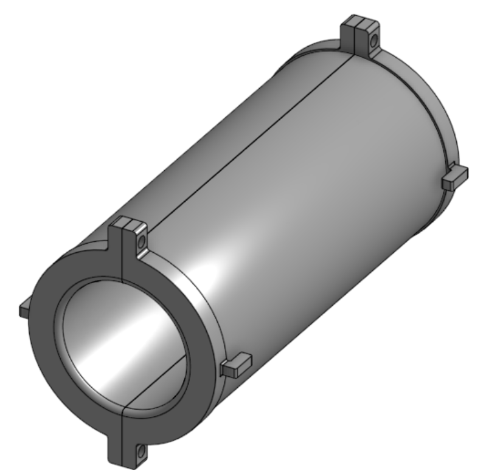
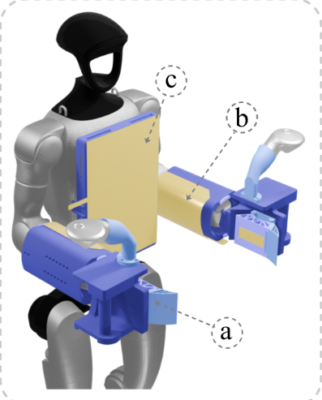
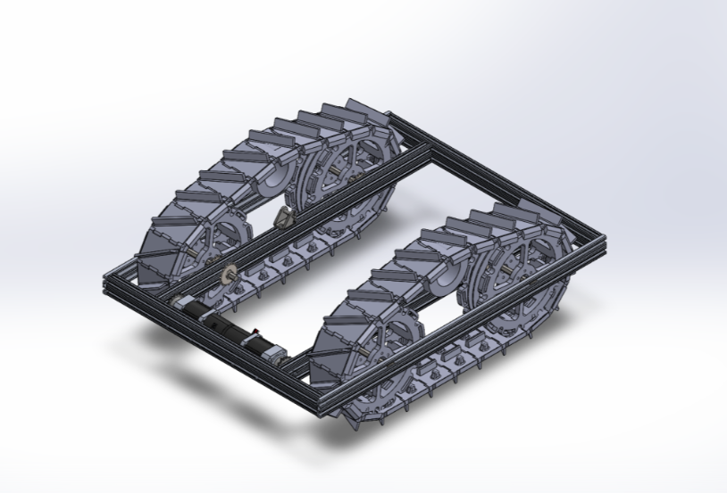
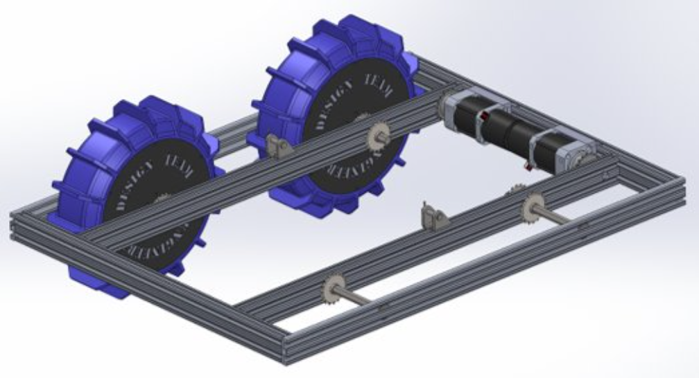
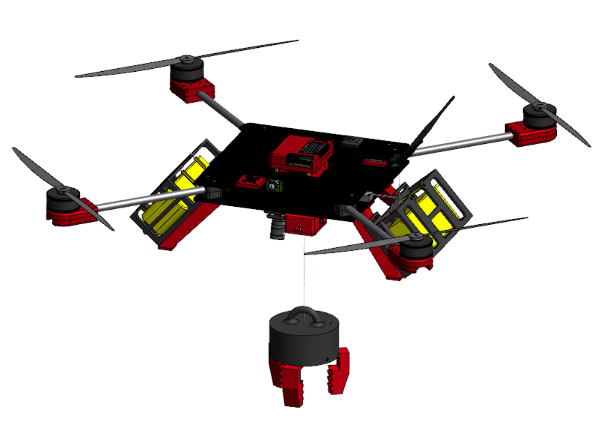

Education
Mechanical Engineering
Georgia Institute of Technology
2025 – 2027
Mechanical Engineering
University of Illinois Chicago
2021 – 2025
Skills
Software & Programming
Prototyping & Fabrication
Mechanical Engineering Master's Student at Georgia Tech
Georgia Institute of Technology
2025 – 2027
University of Illinois Chicago
2021 – 2025
Software & Programming
Prototyping & Fabrication
I'm currently a mechanical engineering master's student at Georgia Tech with a focus in automation, robotics and control. I'm passionate about bridging the gap between mechanical hardware and intelligent control systems for manufacturing, aerospace, and medical tech applications. Actively looking for fall 2026 internships and full-time roles.
Intel
Georgia Institute of Technology
Paper (In Submission): WT-UMI: Tactile-based Whole-Body Manipulation via Force-Supervised Contact-Aware Planning | Website




University of Illinois Chicago
University of Illinois Chicago
Collaborated in a team of 4 to design and build a drivetrain for a lunar robot competition entry. The drivetrain was designed to handle the rover's weight and provide reliable performance during the competition. The project was presented at an engineering exhibition.


Collaborated cross-functionally with peers to pioneer an autonomous drone capable of object detection and airdrop delivery. The drone was designed to operate at various altitudes for a long duration and safely deliver a payload to a designated location.
